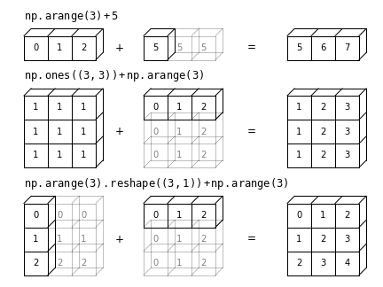

Bu sayfa orijinal kitap bölümünün eksiksiz Türkçe uyarlamasıdır — atlanan başlık/kod yoktur. Zor yerlerde ek ders notu ve 🧪 Şimdi deneyin kutuları vardır.
Orijinal (EN): 05 Computation on Arrays: Broadcasting · Jupyter notebook
2.5 NumPy Dizilerinde Hesaplama: Broadcasting
Orijinal: 05 Computation on Arrays: Broadcasting
2.3 UFuncs bölümünde NumPy'nin evrensel fonksiyonlarının yavaş Python döngülerini kaldırarak işlemleri vektörize ettiğini gördük. Bu bölüm broadcasting (yayınlama) kurallarını anlatır: farklı boyut ve şekillerdeki diziler arasında ikili işlemler (toplama, çıkarma, çarpma vb.) nasıl yapılır.
Broadcasting'e Giriş
Aynı boyuttaki dizilerde ikili işlemler eleman eleman yapılır:
import numpy as npa = np.array([0, 1, 2])
b = np.array([5, 5, 5])
a + bBroadcasting, farklı boyutlardaki dizilerle de bu tür işlemlere izin verir — örneğin bir skaleri (sıfır boyutlu dizi gibi düşünün) bir diziye ekleyebiliriz:
a + 5Bunu, 5 değerinin [5, 5, 5] dizisine “yayıldığı” ve sonuçların toplandığı bir işlem olarak düşünebilirsiniz.
Aynı fikri daha yüksek boyutlu dizilere genişletebiliriz. Tek boyutlu bir diziyi iki boyutlu bir diziye eklediğimizde:
M = np.ones((3, 3))
MM + aBurada tek boyutlu a dizisi, M ile şekil eşleşmesi için ikinci boyut boyunca yayınlanır (broadcast edilir).
Daha karmaşık durumlarda her iki dizi de yayınlanabilir:
a = np.arange(3)
b = np.arange(3)[:, np.newaxis]
print(a)
print(b)a + bDaha önce tek bir değeri diğerinin şekline yaydığımız gibi, burada hem a hem b ortak bir şekle yayılır ve sonuç iki boyutlu bir dizidir!
Bu örneklerin geometrisi aşağıdaki şekilde görselleştirilmiştir (kaynak: kitap ek kodu, astroML dokümantasyonundan uyarlanmıştır):

Açık kutular yayınlanan değerleri temsil eder. Bellek açısından verimlilik endişesi doğurabilir; endişelenmeyin: NumPy broadcasting yayınlanan değerleri bellekte gerçekten kopyalamaz. Yine de broadcasting hakkında düşünürken bu zihinsel model faydalıdır.
Broadcasting Kuralları
NumPy'da broadcasting iki dizi arasındaki etkileşimi belirlemek için katı kurallara uyar:
- Kural 1: İki dizinin boyut sayısı farklıysa, daha az boyutlu olanın şekli sol taraftan (baştan)
1ile doldurulur (padding). - Kural 2: Herhangi bir boyutta şekiller uyuşmuyorsa, o boyutta boyutu
1olan dizi diğerinin boyutuna gerilir (stretch). - Kural 3: Herhangi bir boyutta boyutlar uyuşmuyorsa ve ikisi de
1değilse hata oluşur.
Broadcasting Örneği 1
İki boyutlu bir diziye tek boyutlu bir dizi eklemek isteyelim:
M = np.ones((2, 3))
a = np.arange(3)Şekiller:
M.shape→(2, 3)a.shape→(3,)
Kural 1: a daha az boyutlu; sol taraftan 1 ile doldurulur → (1, 3). Kural 2: ilk boyut uyuşmaz; 1 → 2 gerilir. Son şekil: (2, 3).
M + aBroadcasting Örneği 2
Her iki dizinin de yayınlanması gereken durum:
a = np.arange(3).reshape((3, 1))
b = np.arange(3)a.shape→(3, 1)b.shape→(3,)→ Kural 1 ile(1, 3)- Kural 2: her iki taraftaki
1boyutları karşı tarafa gerilir → ikisi de(3, 3)
a + bBroadcasting Örneği 3
Uyumsuz iki dizi:
M = np.ones((3, 2))
a = np.arange(3)İlk örneğe benzer ama M transpoze edilmiş gibi: M.shape = (3, 2), a → (1, 3) → (3, 3). Kural 3: ikinci boyut 2 vs 3 — uyumsuz!
try:
M + a
except ValueError as e:
print("Hata:", e)Kafa karışıklığı: a'yı sağ taraftan 1 ile doldurarak uyumlu hale getirebileceğinizi hayal edebilirsiniz — ama kurallar böyle çalışmaz! Sağ taraftan padding istiyorsanız açıkça yeniden şekillendirin (2.2 NumPy Dizilerinin Temelleri'ndeki np.newaxis ile):
a[:, np.newaxis].shapeM + a[:, np.newaxis]Burada + operatörüne odaklandık; bu kurallar herhangi bir ikili ufunc için geçerlidir. Örneğin logaddexp(a, b) — log(exp(a) + exp(b)) — daha hassas hesaplar:
np.logaddexp(M, a[:, np.newaxis])Evrensel fonksiyonlar için bkz. 2.3 UFuncs.
Broadcasting Pratikte
Broadcasting, kitabın geri kalanında sık karşılaşacağınız birçok örneğin özünü oluşturur.
Bir Diziyi Ortalamadan Çıkarma
Veri biliminde yaygın bir örnek: satır veya sütun ortalamasını çıkarmak. 10 gözlem × 3 özelliklik bir dizi (Scikit-Learn veri temsili geleneği; bkz. kitap Bölüm 5):
rng = np.random.default_rng(seed=1701)
X = rng.random((10, 3))Her sütunun ortalaması (axis=0):
Xmean = X.mean(0)
XmeanOrtalamayı çıkararak merkezleme (broadcasting işlemi):
X_centered = X - XmeanDoğrulama — merkezlenmiş dizinin sütun ortalamaları sıfıra yakın olmalı:
X_centered.mean(0)Makine hassasiyeti içinde ortalama artık sıfırdır.
İki Boyutlu Bir Fonksiyonu Çizme
Broadcasting, $z = f(x, y)$ gibi iki boyutlu fonksiyonları ızgara üzerinde hesaplamak için idealdir:
# x ve y: 0–5 arası 50 adım
x = np.linspace(0, 5, 50)
y = np.linspace(0, 5, 50)[:, np.newaxis]
z = np.sin(x) ** 10 + np.cos(10 + y * x) * np.cos(x)
print("z.shape:", z.shape)
print("z min/max:", z.min(), z.max())Matplotlib ile bu iki boyutlu dizi görselleştirilebilir (kitap Bölüm 4 — Density and Contour Plots). Pyodide ortamında grafik yerine şekil ve değer aralığını yazdırıyoruz; tam kod:
# Matplotlib ile (notebook ortamında):
# import matplotlib.pyplot as plt
# plt.imshow(z, origin='lower', extent=[0, 5, 0, 5])
# plt.colorbar()Yukarıdaki x, y ızgarasıyla z = np.sin(x)**2 + np.cos(y) hesaplayın; z.shape ve bir köşe değerini yazdırın.
import numpy as np
x = np.linspace(0, 5, 50)
y = np.linspace(0, 5, 50)[:, np.newaxis]
z = np.sin(x) ** 2 + np.cos(y)
print(z.shape, z[0, 0])